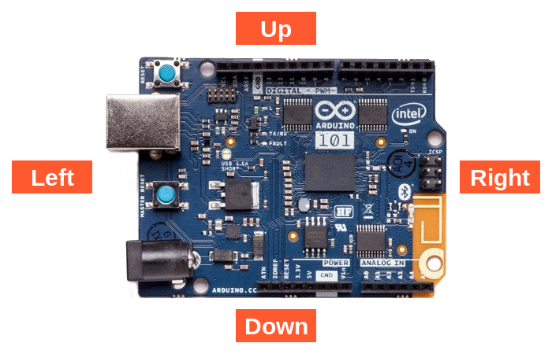

This is a brief description of each Scratch block included in the Arduino 101 extension.
Sets a digital pin (2, 3, 4, 5, 6, 7, 8, 9, 10, 11, 12, 13) to either on or off.
Sets a digital PWM pin (3, 5, 6, 9) to a value between 0 - 100%.
Gets triggered when a digital pin (2, 3, 4, 5, 6, 7, 8, 9, 10, 11, 12, 13) changes to an on or off state.
Reads a digital pin (2, 3, 4, 5, 6, 7, 8, 9, 10, 11, 12, 13). Returns true if the pin is on or false if the pin is off.
Gets trigged when an analog pin (A0, A1, A2, A3, A4, A5) matches the condition.
Reads the value of an analog pin (A0, A1, A2, A3, A4, A5). Returns a value from 0 - 100.
Gets triggered when the Arduino is physically "shaken".
Reads the physical orientation of the Arduino board. Returns the angle of rotation in degrees matching the illustration below.
Sets a positional rotation (sweeping) servo connected to a digital pin (2, 3, 4, 5, 6, 7, 8, 9, 10, 11, 12, 13) to a specified angle in degrees. Accepts angles from 0 - 180 degrees.
Reads the current position of a servo. Returns a position between 0 - 180 degrees.